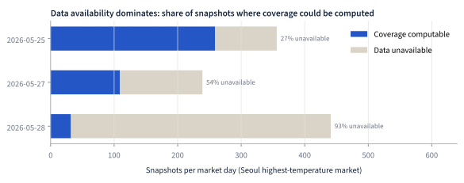

Research Question
预测市场的价格常被当作“市场认为的概率”。但在结构固定的市场里，价格之间存在硬约束。这个项目想回答两个问题：第一，这些约束在实盘中有没有被违反？第二，如果违反了，在考虑盘口深度、数据延迟和结算规则之后，还能不能真正成交？
第二个问题更重要。研究中很容易算出一个“理论信号”，但交易系统关心的是这个信号背后有没有足够的挂单、行情和观测数据是否同步，以及结算依据和我们观测的数据是否一致。
Coverage Logic
设市场把温度分成区间 ，截至当前的当日最高温为 。最终的最高温不会低于 ，所以只有上界不低于 的区间还可能获胜。买入这些区间各一份的成本为
若 ，理论上锁定 的收益。但这里有三层不确定性，因此正式信号的阈值定得很保守，取 ：
- 市场按 Wunderground 上指定气象站的记录结算，而系统用 IEM ASOS 的观测作为代理，两者在取整和更新时间上可能不同。
- 盘口第一档的挂单量可能只有几美分，按卖一价算出来的成本并不代表能买到足够的份数。
- 行情、观测和市场发现来自三个不同的接口，任何一个延迟或失败，都会让 失真。
所以系统把“理论覆盖”和“可执行覆盖”分开计算。只要任何一个入选区间缺少卖单、盘口为空或市场已关闭，这次覆盖就不被视为可执行，并记录具体的阻断原因。
System Design
系统是只读的，不会下单。每一轮监测依次完成以下步骤：
- 通过 Gamma API 发现当天的市场，把每个子市场解析成温度区间和对应的 YES / NO 合约。
- 从市场规则文本中解析出结算气象站；如果解析失败或出现冲突，就跳过观测和覆盖计算，不使用配置里的备用站点。
- 按城市当地日期读取 IEM ASOS 观测，得到当日最高温。
- 读取 CLOB 盘口，给每个区间标注状态：正常、无卖单、无盘口、缺少合约、市场关闭或请求超时。
- 计算覆盖成本，并依次检查市场、区间、观测、覆盖、阈值和挂单量，只有全部通过才判为可执行。
- 写入带时间戳的快照，并更新每个市场的日内状态。
市场生命周期由一个状态机管理：价格达到 0.99 后进入接近结算的确认期，每 10 秒检查一次，连续 10 分钟成立才确认；确认后降低当天市场的检查频率，并提前开始监测次日市场；到城市当地零点，次日市场升级为当前市场，旧市场在 90 分钟的观测延迟窗口之后逐步归档。
项目共有 13 个核心模块和 107 个单元测试，覆盖区间解析、市场发现、覆盖计算、状态切换、多城市边界情况和盘口诊断。首尔是唯一的正式监测城市；另外 7 个城市已经配置好，但默认关闭，只在隔离目录里做过试运行，不会影响正式监测的数据。
Results
对首尔市场 2026-05-25、05-27、05-28 三天的快照，以及 05-25 夜间至 05-26 上午的换日窗口，做了逐日复盘和跨日汇总。

覆盖成本低于 1 的情况确实存在，但呈现两种不同的模式。05-25 的典型情况是：观测到的最高温从 26°C 刷新到 27°C 之后，盘口没有立刻重新定价，覆盖成本在 12 分钟内最低降到 0.87，之后通过卖价调整恢复。05-27 则没有出现最高温刷新，低于 1 的情况多发生在数据恢复后的第一个有效观测附近，幅度只有 0.97–0.999。
换日窗口里的 5 段机会在经济上很浅：按各区间盘口第一档的挂单量计算，单段最大毛利只有 0.07 美元，最小的可成交份数只有 0.01。扣除手续费和滑点后，基本没有交易价值。

这说明系统当前最大的风险不在计算逻辑，而在外部数据的可用性。05-28 这一天几乎全部快照都不可用，因此它说明的是系统的脆弱性，而不是市场的定价情况。状态机部分的复盘全部通过：系统按设计进入确认期，等待 600 秒后确认，并找到了次日的市场。
Limitations
- 样本很小。只有一个城市的三个交易日，结论只能说明这类信号的形态，不能估计它出现的频率或收益。
- 观测是代理数据。IEM ASOS 与 Wunderground 的结算记录并不完全一致，取整和更新时间的差异可能制造虚假信号。
- 没有考虑费用和成交。覆盖成本按卖一价计算，没有扣除手续费，也没有模拟逐档成交。
- 复盘依赖已保存的报告。原始快照已经清理，跨日汇总是基于逐日报告重建的，部分事件的时间距离无法重新计算。
下一步是记录最高温刷新之后 15 分钟内的覆盖成本变化和卖价恢复速度，加入按挂单量计算的收益上限，并把各数据源的重试次数分开统计。
Reproducibility
源码在 research-projects/polymarket-weather/。运行环境为 Python 3.12+，先执行 pip install -r requirements.txt，再把 config.example.yaml 复制为 config.yaml。执行 python main.py --once 跑一轮监测，执行 pytest -q 运行全部测试。
运行时数据（约 930MB 快照）、服务器部署配置和密钥都没有随附。逐日和跨日的复盘报告在 review/reports/ 中。